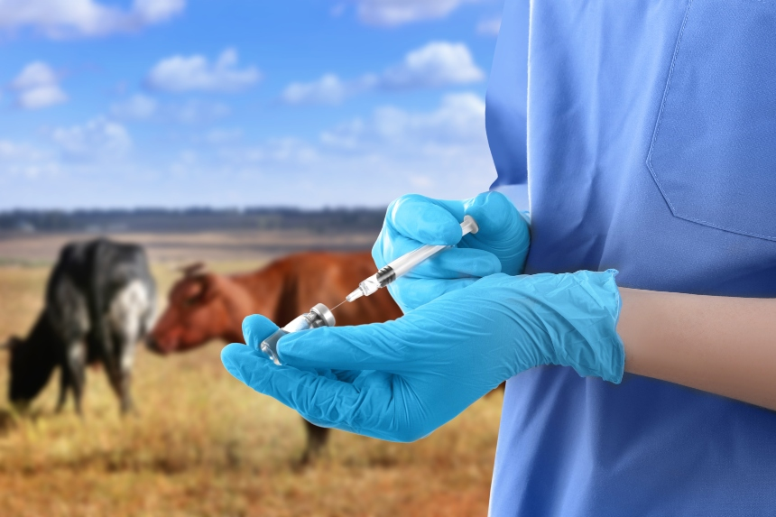
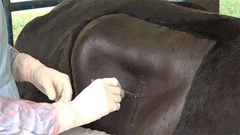
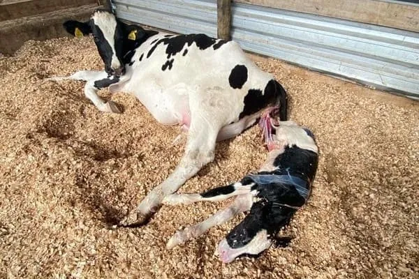
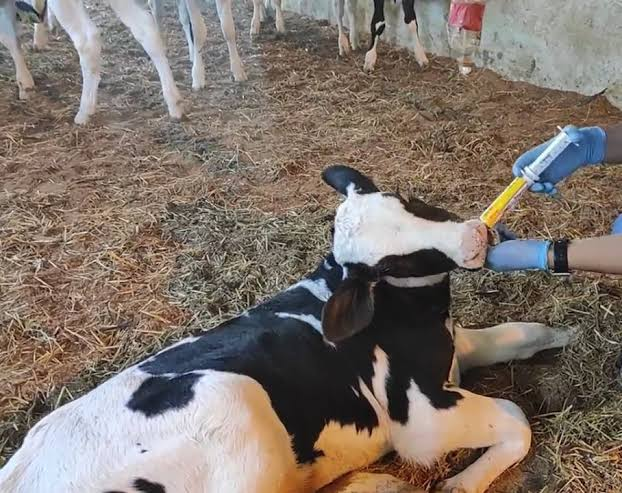

Vacinação
Calendário sanitário completo para o seu rebanho, com aplicação e registro de cada lote.
a partir de R$ 50 por animal
Agendar vacinaçãoVeterinários de campo para bovinos, equinos e outros animais de grande porte. Vamos até a sua propriedade, de dia ou de madrugada.
Atendimento na sua propriedade, com equipe e equipamentos para cada situação.

Calendário sanitário completo para o seu rebanho, com aplicação e registro de cada lote.
a partir de R$ 50 por animal
Agendar vacinação
Procedimentos de rotina e de urgência realizados no local, com anestesia e acompanhamento.
a partir de R$ 650
Agendar cirurgias
Assistência a partos normais e difíceis, para proteger a mãe e o filhote.
a partir de R$ 450
Agendar partos
Diagnóstico, medicação e acompanhamento até a recuperação do animal.
a partir de R$ 220
Agendar tratamento de doençasAtendemos bovinos, equinos, bubalinos, ovinos, caprinos e suínos.
Valores de referência. O orçamento final é combinado antes do atendimento.
A AgroVet nasceu da experiência de dois médicos-veterinários que trabalhavam no campo e viam o mesmo problema se repetir: o animal adoece ou o parto complica de madrugada, e o produtor não tem a quem recorrer.
Os dois sócios decidiram montar uma equipe que atendesse a qualquer hora, todos os dias, e fosse até a propriedade com o material necessário. Hoje a AgroVet cuida de vacinação, cirurgias, partos e tratamento de doenças em animais de grande porte.
Sócio-fundador, médico-veterinário
Sócio-fundador, médico-veterinário
Cuidar da saúde dos animais de grande porte com atendimento rápido, em qualquer hora, direto na propriedade, para proteger o trabalho e o sustento de quem vive do campo.
Ser a veterinária de campo de referência da nossa região em urgências e em saúde do rebanho, reconhecida pela presença e pela confiança dos produtores.
Quer fazer parte da equipe AgroVet? Veja as vagas que costumamos abrir e envie seu currículo.
Ver vagas e enviar currículoPreencha os dados e enviaremos o pedido direto para o nosso WhatsApp. Respondemos para confirmar o horário.